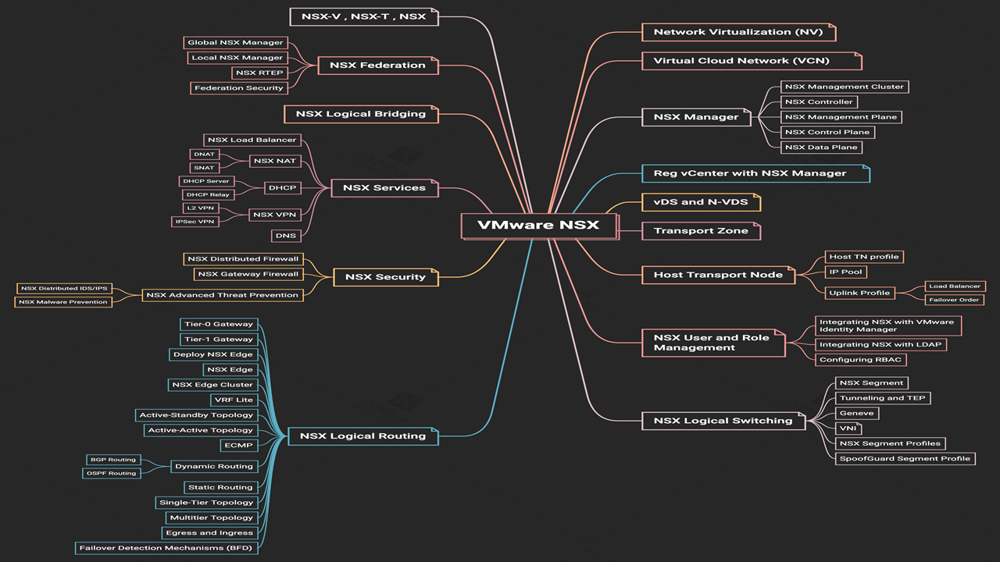

| |
Network virtualizationChapitre 1, virtualization du réseaux |
| |
Network virtualizationChapitre 1, virtualization du réseaux |
Le sujet NSX est devenu très courant ces derniers temps, même si c'est un produit relativement nouveau chez VMware, il a suscité beaucoup d'intérêt ces derniers temps. VMware elle-même s'intéresse beaucoup à NSX et le met en avant dans ses campagnes marketing. Honnêtement, c'est un excellent produit et il est devenu très demandé, notamment par les grandes entreprises et les multinationales en particulier. Jusqu'à maintenant, il y a une pénurie de personnes capables de travailler sur NSX, ce qui en fait un sujet très utile à maîtriser. Par exemple, après avoir étudié VMware vSphere, vous pourrez vous spécialiser sur NSX.
|
L'image suivante illustre les principales fonctionnalités de NSX que nous allons aborder. Ce sont des éléments que vous devez maîtriser parfaitement, à la fois théoriquement et pratiquement. Vous ne pouvez pas prétendre être compétent sur NSX si vous ne pouvez pas répondre à ces questions de base. Ces points doivent être gravés dans votre esprit pour que vous puissiez dire "j'ai bien maîtrisé NSX". Ce sont les sujets fondamentaux que nous allons couvrir tout au long du cours. Certains sujets pourront être traités en un seul chapitre, tandis que d'autres nécessiteront plusieurs. |
|  |
Nous expliquons NSX version 4. Actuellement, la version que nous utilisons pour la démonstration est la "4.1.0". Il n'y a pas de différences majeures entre les versions, mais certaines fonctionnalités peuvent être nouvelles dans chaque version. Parfois, je vous dirai de faire attention à certaines fonctionnalités qui ont été introduites dans telle ou telle version. Bien que certaines mises à jour ne soient que des correctifs, d'autres versions apportent de nouvelles fonctionnalités très utiles. Il est donc essentiel de comprendre ces évolutions pour bien utiliser NSX.
À partir du prochain chapitre, nous commencerons à aborder les sujets de manière plus approfondie concernant NSX. Nous partirons de zéro, donc il n'est pas nécessaire que vous ayez des connaissances préalables en virtualisation réseau ou en NSX. Merci à tous et à bientôt.
Suivant{kind=link}